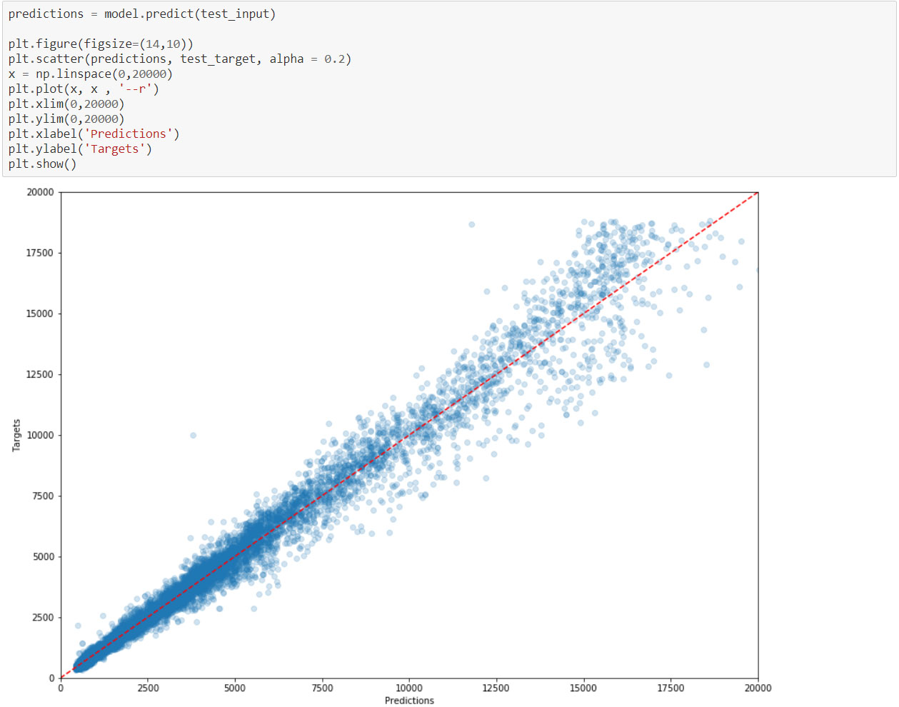
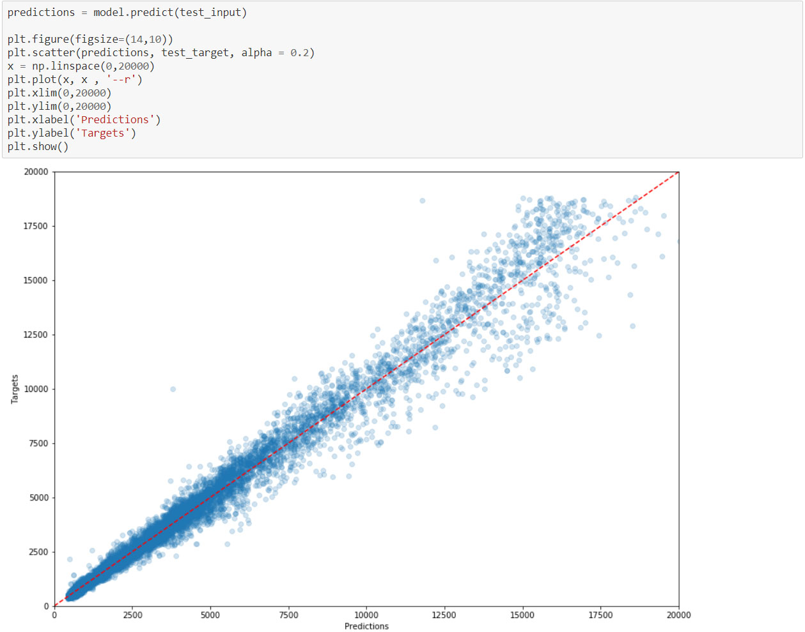

Make your own estimations! (diamond characteristics are explained below)
When I started working in the jewelry industry,
I asked one of my coworkers how the prices of diamonds were set before brands bought them.
She said that prices are set and weekly updated in a document called the Rapaport Diamond Report.
The problem is that you need to be a subscriber in order to access it, and I don’t want to do that.
So instead, how about we examine the prices and corresponding characteristics of some diamonds
to create a model able to determine diamond prices. We could then create the module above to make these estimations even more easily.
Before we start, a quick note:
the price of a diamond is mainly derived from what are commonly known as the 4C: Cut, Clarity, Carat, Color.
You can find more information on the website of
the Gemmological Institute of America.
For this reason, I decided that these are the inputs we are going to use to determine the prices in our model.
The reason is that if we came across a diamond that we wanted to estimate,
it would be pretty hard to get all of the other measurements that we have in this dataset.
With that in mind, let’s begin and look at what we have here:
First, we have no empty lines, which is going to make our task easier.
However, we see that the prices cover a range
going from $326 to $18,823 but with a median price at $2,401.
This means that we can expect our model to be much more efficient for lower priced diamonds
than more expensive ones since it will have had many more examples to train on. Let's check out the distribution of prices visually.
Price distribution Carat distribution
Looking at the distribution of the weight in carats of the diamonds in our dataset, it seems clear that our prices are correlated
to the weight of the diamonds, which feels like it makes sense, even without knowing much about diamonds.
Let's start transforming our dataset so we can work with it.
First, we will map the characteristics that we decided we would use as inputs. As we said earlier, these would be the 4C.
Carat is a numerical value, so we will let it be for now.
Clarity, Color and Cut, however, are strings. If we look at that GIA document,we will learn the following:
Clarity is noted on a scale from IF (being the best, “Internally Flawless”) to I3 (being the worst, “Included”);
Color is noted on a scale from D (being the best) to Z;
Cut, according to GIA is noted from Excellent to Poor. Here, we find “Premium” and “Ideal”.
It does not really fit here, so let’s assume that “Premium” is better than “Very Good” and that “Ideal” is the best;
Now that we have done that, let's get to the standardizing and splitting our data.
We will first drop the original columns as well as
the ones we decided earlier were not going to be useful for us.
Let's save our inputs in a variable and our target prices in another,
and split them in three sections: train, validation, and test
Finally, let's standardize everything.
We are now ready to create our model. We have several ways to choose from,
and since we are looking for a price given characteristics, so we could do a multiple linear regression,
but it might be a bit simplistic,
so instead let's see what a neural network could do for us.
I have experiemented with different versions, number of layers, optimizers, etc.
and this is one version that returns a good result.
We plot our losses to make sure there was no overfitting.
Seems like we did well, since our validation loss does not cross the train loss.
Now let's plot our predictions on our test data against the actual targets.
If we get something close to a 45° line, it means that our model performed well.

Looks pretty good, doesn't it? Just to confirm, let's get a metric value on how we did.
We get a root mean square error of around 600. What does that mean? It means that on average, our model is able to make predictions that will be
within $600 of the actual price. (as a comparison, I ran a multiple linear regression model on the same dataset which returned
a root mean square error of 1,224, more than double what we have!
Is it a good result? I think that given our dataset, it is actually a pretty good one. Remember that 75% of our diamonds
were $5,324 or less, but that our maximum value was almost $19,000! Yet, despite of that our model is still able to predict credible prices even for bigger gems.
Let's look at a couple of examples:
And there it is! This works pretty well for diamonds that are 1 or 1.5 carat maximum.
However, if we wanted to really accurately predict prices for really big diamonds, we would first need to update our model
with a bigger sample that would give us a better view of what is happening for these.
(diamond characteristics are explained below)
When I started working in the jewelry industry, I asked one of my coworkers how the prices of diamonds were set before brands bought them. She said that prices are set and weekly updated in a document called the Rapaport Diamond Report. The problem is that you need to be a subscriber in order to access it, and I don’t want to do that. So instead, how about we examine the prices and corresponding characteristics of some diamonds to create a model able to determine diamond prices. We could then create the module above to make these estimations even more easily.
Before we start, a quick note: the price of a diamond is mainly derived from what are commonly known as the 4C: Cut, Clarity, Carat, Color. You can find more information on the website of the Gemmological Institute of America.
For this reason, I decided that these are the inputs we are going to use to determine the prices in our model. The reason is that if we came across a diamond that we wanted to estimate, it would be pretty hard to get all of the other measurements that we have in this dataset.
With that in mind, let’s begin and look at what we have here:
First, we have no empty lines, which is going to make our task easier. However, we see that the prices cover a range going from $326 to $18,823 but with a median price at $2,401. This means that we can expect our model to be much more efficient for lower priced diamonds than more expensive ones since it will have had many more examples to train on. Let's check out the distribution of prices visually.
Looking at the distribution of the weight in carats of the diamonds in our dataset, it seems clear that our prices are correlated to the weight of the diamonds, which feels like it makes sense, even without knowing much about diamonds.
Let's start transforming our dataset so we can work with it. First, we will map the characteristics that we decided we would use as inputs. As we said earlier, these would be the 4C. Carat is a numerical value, so we will let it be for now. Clarity, Color and Cut, however, are strings. If we look at that GIA document,we will learn the following:
Now that we have done that, let's get to the standardizing and splitting our data. We will first drop the original columns as well as the ones we decided earlier were not going to be useful for us.
Let's save our inputs in a variable and our target prices in another, and split them in three sections: train, validation, and test Finally, let's standardize everything.
We are now ready to create our model. We have several ways to choose from, and since we are looking for a price given characteristics, so we could do a multiple linear regression, but it might be a bit simplistic, so instead let's see what a neural network could do for us.
I have experiemented with different versions, number of layers, optimizers, etc. and this is one version that returns a good result.
We plot our losses to make sure there was no overfitting.
Seems like we did well, since our validation loss does not cross the train loss. Now let's plot our predictions on our test data against the actual targets. If we get something close to a 45° line, it means that our model performed well.
Looks pretty good, doesn't it? Just to confirm, let's get a metric value on how we did.
We get a root mean square error of around 600. What does that mean? It means that on average, our model is able to make predictions that will be within $600 of the actual price. (as a comparison, I ran a multiple linear regression model on the same dataset which returned a root mean square error of 1,224, more than double what we have!
Is it a good result? I think that given our dataset, it is actually a pretty good one. Remember that 75% of our diamonds were $5,324 or less, but that our maximum value was almost $19,000! Yet, despite of that our model is still able to predict credible prices even for bigger gems.
Let's look at a couple of examples:
And there it is! This works pretty well for diamonds that are 1 or 1.5 carat maximum. However, if we wanted to really accurately predict prices for really big diamonds, we would first need to update our model with a bigger sample that would give us a better view of what is happening for these.
Check out my other projects!
Dataset from Kaggle.